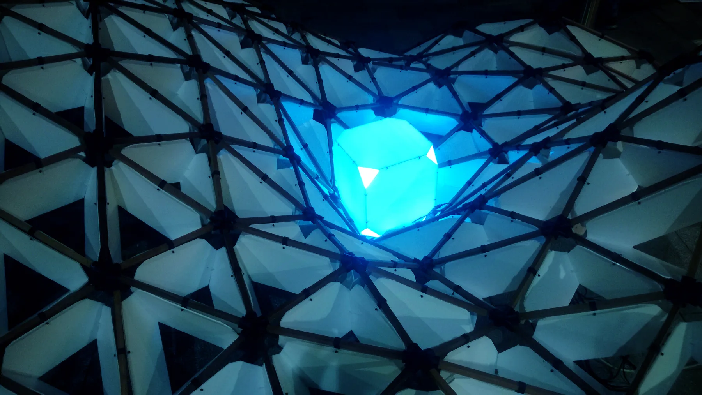
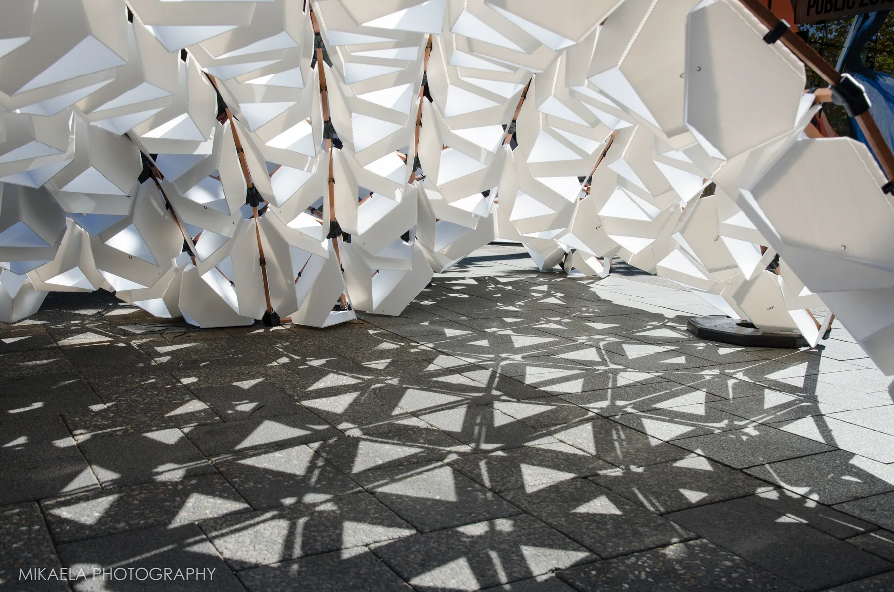
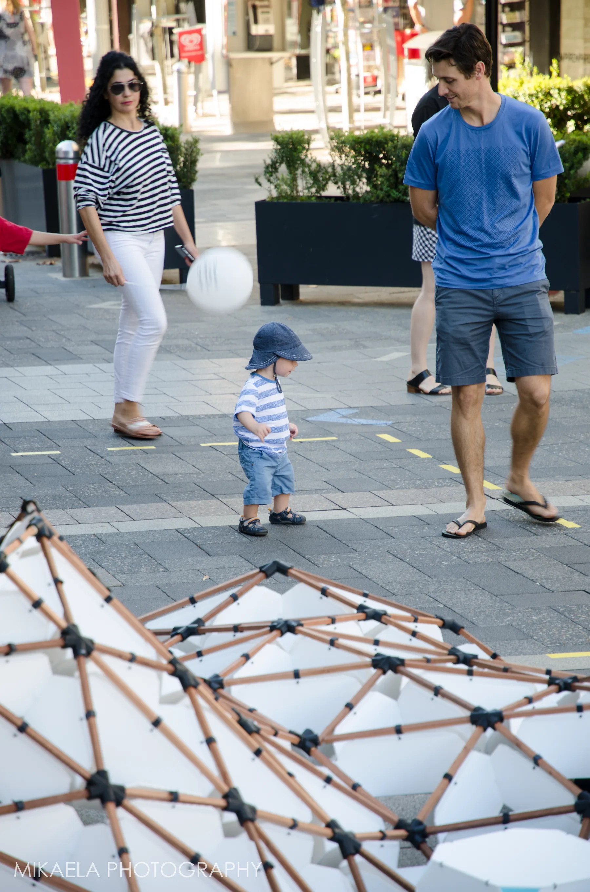
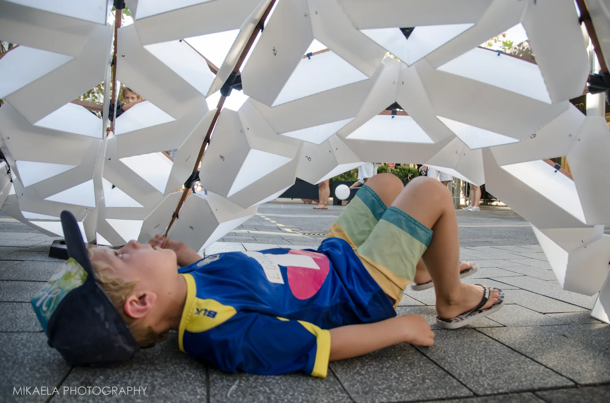
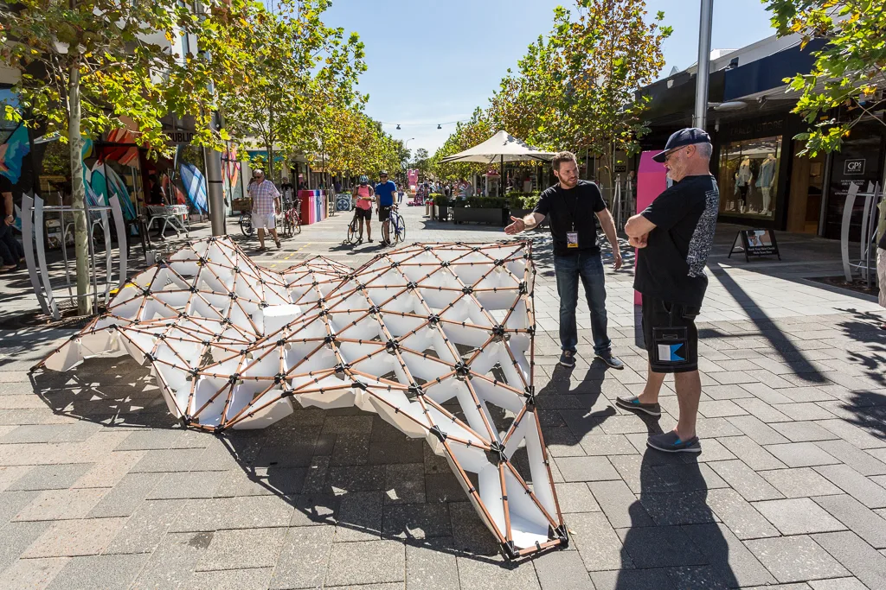
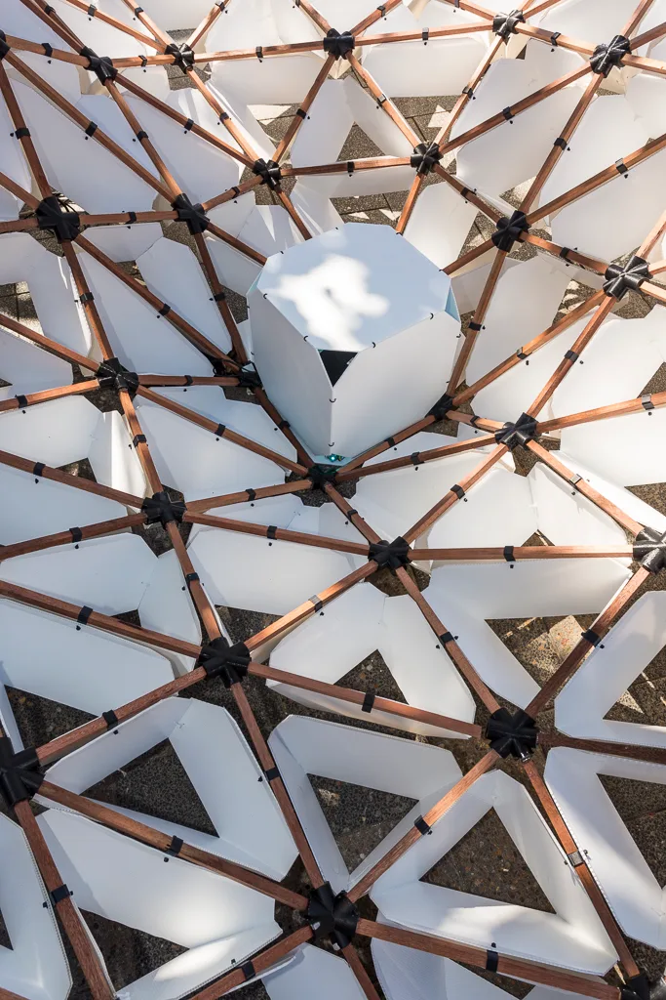

FIHSIHKAHLVRRCHUWAHL Temporary Interactive Installation
Commissioned by FORM
This experimental prototype was developed for FORM’s PUBLIC Platform competition. It explores the potential of interactive architectural components and the digital fabrication of complex geometries. Building on the Ambient Sphere project, the work responds to the movement of people within the surrounding space.
The sculpture was equipped with LED lighting and a speaker that read aloud social media posts received during the event. Its lighting patterns and intensity shifted in response to the movement and choreography of the people gathered around it, creating an evolving relationship between the object and its audience. The structure was fabricated from jarrah planks, 3D-printed joints and Flute Core panels.
- Design: Robert Cameron, Andrei Smolik
- Year completed: 2016
- Location: Claremont Quarter, Perth
- Client: FORM
- Budget: $1,500
- Size: 3.5m x 4.4m + interactive space 4m x 5m







-1024w.webp)